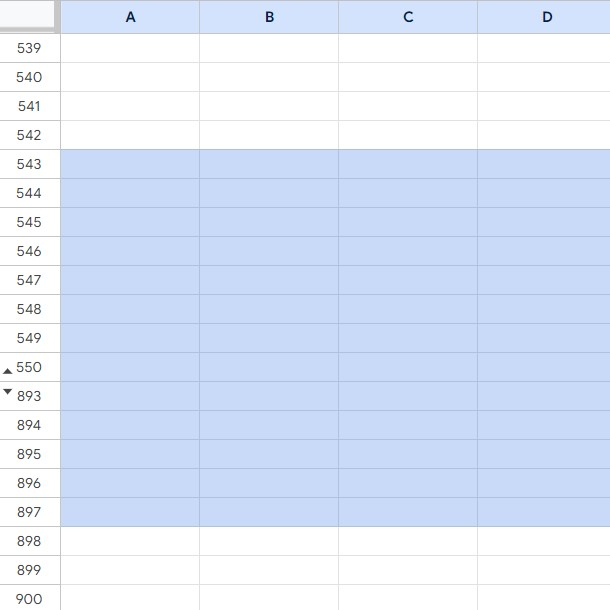

DSC 10’s only prerequisite is high school algebra. In order to gauge
your preparedness for the type of math you’ll see in this class, you
should work through the following practice problems on your own. You
will not submit it, and it will not be graded, but it will help you
identify any gaps in your background knowledge and it will teach you
some useful test-taking skills. Solutions will be posted here on
Wednesday, April 3.
Problem 1
Express \frac{42}{9} \cdot
\frac{36}{21} as an integer without using a calculator and
without long division or multiplication.
Answer: 8
The idea is to look for common factors in the numerator and
denominator and then cancel. We notice that 42 and 21 both share a
factor of 7, and that 36 is a multiple of 9.
Choose the answer below that is closest to 412 \cdot 289, without using a calculator and
without performing long multiplication.
40{,}000
80{,}000
120{,}000
160{,}000
Answer: 120{,}000
We can estimate the answer by solving a similar problem, 400\cdot300, which has numbers close to those
given, but are much easier to work with. Since 400\cdot300 = 120{,}000, we would estimate
that 412\cdot289 is similar. If you’re
curious, a calculator will tell you that 412\cdot289 = 122{,}776.
Problem 3
Express \frac{16}{40} as a
percentage without using a calculator and without long division or
multiplication.
Answer: 40%
There are many ways to do this. One way is to simplify the fraction.
The numerator, 16, and the denominator, 40, are both divisible by 4, so
the fraction is equivalent to \frac{4}{10}, which is same as \frac{40}{100}, or 40%.
Another way is to solve the equation \frac{16}{40} = \frac{x}{100}. We can solve
this equation for x by multiplying both
sides by 100, to get x =
\frac{1600}{40}. Since both the numerator and denominator end in
0, we can divide both by 10, to get x =
\frac{160}{4}, or x = 40.
We can also solve this by recognizing that 40 \cdot 2.5 = 100. Therefore if we also
multiply the numerator of 16 by 2.5, we will convert \frac{16}{40} to its corresponding fraction
out of 100, which is \frac{16 \cdot 2.5}{40
\cdot 2.5} = \frac{40}{100}, or 40%.
Problem 4
I just sent my friend $50 on Venmo and that used up 25% of my Venmo
account balance. How much money is left in my Venmo account? Solve this
problem without a calculator.
Answer: $150
If $50 was 25%, or one fourth, of my account balance, then my
original account balance was \$50 \cdot 4 =
\$200. After I pay the $50 to my friend, my account balance drops
to \$200 - \$50 = \$150.
Problem 5
A bicycle shop is going out of business and has a 30% discount on all
bikes. I also have a coupon for an additional 40% off any bike. As
compared to the original price, what discount will I get if I use my
coupon on top of the going-out-of-business discount? Solve this problem
without a calculator.
Answer: 58%
The going-out-of-business discount is a 30% discount, which means I
will pay 70% of the original cost of a bicycle. If I use my coupon to
get 40% off, this means I will pay only 60% of that already-discounted
amount. 60% of 70% is 42% of the original cost, which we obtain by
multiplying 0.6 \cdot 0.7 = 0.42. This
corresponds to a 58% discount off the original price. So I can get the
mattress for less than half its original price when combining both
discounts!
Notice that 40% off on top of 30% off does not equal 70% off.
Percentages don’t add in this way, they multiply. An easy way to see
this is if you took 50% off on top of 50% off. That would be half price
of half price, which is a quarter of the original price. Your discount
would be 75%, not 50% + 50% = 100%. That would be too good to be
true!
Problem 6
You plan to drive to campus for your Monday, Wednesday, Friday
classes and you are interested in knowing how many parking spaces are
available in each of three parking structures (Gilman, Hopkins, and
Pangea). We’ll assume for this problem that these are the only three
parking options available. The table below shows how many unoccupied
spaces there are in each parking structure at 10am on Monday, Wednesday,
and Friday of Week 1.
Gilman
Hopkins
Pangea
Monday
180
840
190
Wednesday
150
850
200
Friday
165
835
220
Problem 6.1
What proportion of available spaces on Wednesday are in Gilman? Fully
simplify your answer without using a calculator and without performing
long division.
Answer: \frac{1}{8}
There are 150 + 850 + 200 = 1200
available parking spaces on Wednesday. 150 of these are in Gilman. So
the proportion we’re looking for is \frac{150}{1200}. To simplify this, we look
for common factors in the numerator and denominator. Both 150 and 1200
end in 0, which means they are both divisible by 10. If we cancel out
the common factor of 10 from the numerator and denominator, we can
simplify the proportion to \frac{15}{120}. This can be further
simplified. Since 15 has factors of 3 and 5, let’s look for factors of
those numbers in the denominator of 120. It turns out that both are
factors, but suppose we first notice that 3 is a factor of 120. This
simplifies the proportion to \frac{15}{120} =
\frac{5}{40}. Then we could notice that 40 is a multiple of 5,
and simplify the proportion to \frac{1}{8}.
Problem 6.2
On average, Gilman is 80% full at 10am on Monday, Wednesday, and
Friday of Week 1. What is the capacity of Gilman? Solve this problem
without a calculator.
Answer: 825
First, we use the Gilman column of the table to compute that on
average, there are 165 available spaces. We can compute this average
quickly without calculation by noticing that 150 and 180 are both
equally far from 165 on a number line, so the average of 180, 150, and
165 must be 165. Since 80% of Gilman is full on average, this means 20%
of Gilman is not full on average. We have figured out that 20% of
capacity is 165 parking spaces, which we can write as 0.2x = 165, or equivalently, \frac{1}{5}x = 165, where x is the capacity of Gilman. Writing 0.2 as
the fraction \frac{1}{5} makes it
easier to solve for x by hand without a
calculator. We can solve for x by
multiplying both sides by 5, so the answer is 165 \cdot 5, which can do using long
multiplication to get 825.
If we want to avoid using long multiplication, we can use a trick: to
multiply by five, multiply by ten and divide by two, both of which are
pretty easy to do. 165 \cdot 10 = 1650
and half of that is 825. So, there are 825 parking spaces in Gilman.
Problem 6.3
On Monday, the percentage of occupied spaces in Pangea is twice the
percentage of occupied spaces in Hopkins. If Pangea has 950 parking
spaces, how many parking spaces does Hopkins have? You may use a
calculator for this part.
Answer: 1400
Let’s start with Pangea since we know more information about that
facility. On Monday, 190 out of 950 parking spaces in Pangea are
available, which means 950 - 190 = 760
parking spaces are occupied. The percentage of occupied spaces in Pangea
is \frac{760}{950} \cdot 100\% = 80\%.
We’re told that is twice the percentage of occupied spaces in Hopkins,
so that means Hopkins must be 40% full. There are 840 available spaces
in Hopkins on Monday. Since Hopkins is 40% full, these 840 unoccupied
spaces correspond to the remaining 60% of spaces in Hopkins. If x is the capacity of Hopkins, we have 0.6x = 840. We can solve for x by dividing both sides by 0.6 to obtain
x = 1400. So, there are 1400 parking
spaces in Hopkins.
Problem 7
Every year, San Diego’s Regional Task Force on Homelessness conducts
a “point-in-time” count of the number of homeless individuals in San
Diego County. They send out a team of over a thousand volunteers to
locate and count homeless individuals throughout the county’s shelters,
streets, encampments, cars, etc. In 2023, newspapers reported that the
count increased by 22% from the 2022 count. Part of that increase was
explained by the fact that for the first time, volunteers were able to
access and count people on Caltrans property. It was also reported that
if we were to exclude the people who were counted on Caltrans property,
the count would have still increased by 14%, meaning that the additional
area covered could not explain all of the increase from one year’s count
to the next. The 2023 point-in-time count was 10,264 individuals.
Problem 7.1
The point-in-time count is an underestimate of the true number of
homeless individuals in San Diego County. Why is it always an
underestimate?
Answer: Volunteers may miss some people who should
have been counted, since it can be hard to locate every single homeless
person.
Problem 7.2
How many individuals in 2023 were counted on Caltrans property? You
may use a calculator.
Answer: 673
We are told that 10,264 homeless individuals were counted in 2023 and
that this was a 22% increase from the 2022 count. We can use this
information to find the 2022 count, which we will call x. Since 1.22x =
10{,}264, we can divide both sides by 1.22 to find that the 2022
count was 8413. The 2023 count of people excluding those counted on
Caltrans property is 14% higher than this number, which is 1.14 \cdot 8413 = 9591. The difference
between the total 2023 count and the count excluding those on Caltrans
property is therefore 10{,}264 - 9591 =
673.
Here is another way to solve this problem without actually
calculating the 2022 count. Again, let x represent the 2022 count. We want to find
the difference between the full 2023 count, which is 1.22x, and the 2023 count without those
counted on Caltrans property, which is 1.14x. Therefore, we need to find 1.22x - 1.14x = 0.08x. We know 1.22x = 10{,}264 as before. So, x = \frac{10{,}264}{1.22} and 0.08x = 0.08 \cdot \frac{10{,}264}{1.22} =
673.
Problem 7.3
The actual number of individuals counted on Caltrans property in 2023
was 661, which should be close to your answer to the previous question,
but not exactly the same. Did the newspapers make a mistake or is there
another explanation for the discrepancy?
Answer: The discrepancy is most likely due to
rounding. Notice that when the newspaper reported the percent increases
(22 and 14), it gave them as whole numbers even though the actual
percent increases could not have been whole numbers.
If x represents the 2022 count, then
based on the informtion given in the question, we have 1.22x = 10{,}264. The exact solution to this
equation is actually x = 8413.1147541,
but since x represents a count of
people, it must be a whole number. This means the 1.22 number in this
equation is an approximation, because it’s easier (both to report and to
interpret) a percent increase that is a whole number and not a
decimal.
Problem 8
At a furniture store, suppose every item has a “true value” that
represents its worth. Every item in the store has a ticketed price,
which is the amount that is printed on the item’s price tag that
customers will pay, that is 25% higher its true value. The store wants
its employees to be able to buy items at their true value. What percent
discount does it need to give its employees off the ticketed price to
accomplish this?
In general, if a store marks up prices by p%, what percent discount does it need to
give to employees off the ticketed price so that they can buy things at
the true value?
Solve this problem without a calculator.
Answer: 20%, or more generally, \frac{100p}{100+p}\%
Let v represent the true value of an
item in the furniture store. The store sells the item for v + 25% of v, which can be expressed as 1.25v. We’ll call this the ticketed price,
which is the amount that would be printed on the item’s price tag.
Now, just to demonstrate the kind of calculation involved, let’s say
the store provides employees with a 25% discount. This would mean that
employees pay 100\% - 25\% = 75\% of
the ticketed price, which is 0.75 \cdot
1.25v. This simplifies to 0.9375v, which is less than the true value
v. This means a 25% employee discount
is too much of a discount, since it allows employees to buy items at
less than the true value. Since the ticketed price is 25% more than the
true value, 25% of the ticketed price is larger than 25% of the true
value; since the employee discount is taken off of the ticketed price,
it needs to be less than 25%.
The question, then, is what percentage discount should the store
provide to employees so that the post-discount price is equal to v? Suppose they provide employees with a
discount of d, where d is a decimal between 0 and 1 (in the
previous example, for instance, it would have been 0.25, which
corresponds to 25%). Then, employees pay (1 -
d) \cdot 1.25v. Now, we need to pick the value of d that makes (1 -
d) \cdot 1.25v equal to v. Let’s
set up an equation:
(1 - d) \cdot 1.25v = v
We need to solve this for d, and
fortunately, if we divide both sides by v, this becomes an equation with just one
variable, which we can solve with algebra:
\begin{align*}(1 - d) \cdot 1.25 &= 1
\\ 1 - d &= \frac{1}{1.25} \\ d &= 1 - \frac{1}{1.25}
\end{align*}
This means that the store needs to give employees a discount of d = \frac{1}{5} = 0.2, or 20%, in order for
their post-discount price to be equal to the true value of the item
they’re buying.
More generally, if a store sells an item for p% more than its true value, v, then the ticketed price is \left(1 + \frac{p}{100} \right)v, or \left(\frac{100 + p}{100}\right)v. For
instance, if p = 25, then the ticketed
price is \frac{100 + 25}{100}v = 1.25v,
which we saw before. Then, the store would need to offer employees a
discount of d (where d is a decimal between 0 and 1) such that
(1 - d) \cdot \frac{100 + p}{100} = 1.
Solving for d gives:
\frac{p}{100 + p} is a decimal
between 0 and 1, so to convert it to a percentage we can multiply it by
100\%. To conclude, if a store sells an
item for p% more than its true value,
v, then they must offer employees a
discount of \frac{p}{100 + p} \cdot
100\% in order for their post-discount price to be equal to v.
This is a scary-looking formula, but let’s try it in action: if we
let p be 25, as it was in the first
part of this question, we then have a discount of \frac{25}{100 + 25} \cdot 100\%, or 0.2 \cdot 100\%, or 20\%.
Problem 9
One of your classes this quarter, PTS 1: Principles of Taylor
Swift, has the following grading scheme:
20% Midterm 1
20% Midterm 2
30% Homeworks (lowest homework dropped)
30% Final Exam
There are 4 homework assignments, but your lowest homework score is
dropped from your overall grade calculation. Each homework assignment is
worth the same amount in your overall grade calculation, even though
they have different numbers of available points. Your scores on all
parts of the course, before the Final Exam, are as follows:
Midterm 1: \frac{98}{100}
Midterm 2: \frac{16}{38}
Homework 1: \frac{3}{4}
Homework 2: \frac{18}{25}
Homework 3: \frac{9}{10}
Homework 4: \frac{12}{13}
What is the minimum possible score you can earn on the Final Exam,
as a percentage, to guarantee that you finish with at
least a B grade (80% overall) in PTS 1? You may use a calculator (tip:
you can type arithmetic expressions into Google and it will perform
calculations for you!).
Answer: 87.5%
Let f be your Final Exam score in
PTS 1, as a decimal between 0 and 1. (We’ll treat f as a decimal because all of your other
scores are provided to us as decimals, or fractions, as well.) If we
knew f, we could calculate your overall
grade right now:
We don’t know f, but we do know the
other variables in the above expression. Your Midterm Exam scores are
given to us directly, but your average score on homeworks, after
dropping your lowest homework, requires a bit of calculation to find.
First, we need to find which of the four homeworks you did the worst on,
so that we can exclude it when calculating your average homework score.
That happens to be Homework 2, which you scored a 72% on; we can find
this without a calculator by noticing that 25
\cdot 4 = 100, so \frac{18}{25} =
\frac{18 \cdot 4}{25 \cdot 4} = \frac{72}{100} = 72\%. This is
lower than Homework 1, which you scored a \frac{3}{4} = 75\% on; Homework 3, which you
scored a \frac{9}{10} = 90\% on, and
Homework 4, which you scored a \frac{12}{13} =
92.3\% on (\frac{12}{13} is a
tough fraction to simplify without a calculator, but you don’t need to,
since has to be greater than \frac{9}{10} which you know is 90%, and thus
it has to be greater than 72%).
This means that the three homework scores that we’re going to include
in your average homework score calculation are \frac{3}{4}, \frac{9}{10}, and \frac{12}{13}. Note that we’re using the
fractional forms rather than something like 92.3% because there’s no
need to round at this stage. The average of these three fractions is
\frac{1}{3} \cdot \left(\frac{3}{4} +
\frac{9}{10} + \frac{12}{13}\right); the result is your average
homework score. We’ll leave it like this for now so that you only need
to put one (big) expression in the calculator.
Now that we have your average homework score, we know most parts of
your overall grade:
Simplifying everything before 30\% \cdot
f in a calculator gives us 53.75%.
It’s worth commenting on how to evaluate such an expression
in a calculator. It’s easier to treat percentages, like 20%, as
decimals, like 0.2, when using a calculator.
Here
you can see the exact expression we typed into a Google search (no need
to use a physical calculator!); 0.5375… is the same as 53.75..%.
Now, we have that your overall grade is
53.75\% + 30\% \cdot f
We need to find the smallest value of f such that your overall grade is at least
80%, or in other words, the smallest value of f that satisfies the inequality
53.75\% + 30\% \cdot f \geq
80\%
Let’s solve:
\begin{align*} 53.75\% + 30\% \cdot f
&\geq 80\% \\ 30\% \cdot f &\geq 26.25\% \\ f &\geq
\frac{26.25}{30} \\ f &\geq 0.875 \end{align*}
So, to earn a B in PTS 1, you’ll need at least an 87.5% on the Final
Exam. Good luck!
Problem 10
Your professor for PTS 1: Principles of Taylor Swift can
grade 150 homeworks in 50 minutes. The TA can grade 150 homeworks in 75
minutes. If the professor and TA work together, how many minutes will it
take them to grade 150 homeworks? Solve this problem without a
calculator.
25 minutes
30 minutes
60 minutes
62.5 minutes
125 minutes
Answer: 30 minutes
To actually solve this problem requires a bit of math, but it turns
out we can narrow it down to the correct answer using the process of
elimination and some common sense. First of all, some of these answers
are tempting because they come naturally from the numbers given in the
problem. For example, 125 minutes is the sum of 50 minutes and 75
minutes. Likewise, 62.5 minutes is the average of 50 minutes and 75
minutes. But does it make sense to sum or average the times? No! Think
of it this way: there is a fixed amount of work to be done (grade 150
homeworks). Working alone, the professor can knock out that task in 50
minutes. With help, the professor will finish the task even faster. So
the answer must be less than 50 minutes.
That leaves two options: 25 minutes and 30 minutes. Notice that 25
minutes is half the time it would take for the professor to grade the
homeworks alone. If the professor were able to clone themself, then the
two professors could grade the homeworks in 25 minutes, working double
the speed of one professor. But the TA is not quite as fast as a second
professor. So it will take more than 25 minutes for one professor and
one TA to complete the grading. This leaves only one answer that can
make sense, so the answer must be 30 minutes. We can solve the problem
without doing any math!
It’s always good to double-check that our answer is correct. Let’s
actually solve this problem using math now. To start, we know that the
professor grades at a rate of 150 homeworks per 50 minutes, which is 3
homeworks per minute because \frac{150}{50} =
\frac{3}{1}. The TA grades 150 homeworks per 75 minutes, or 2
homeworks per minute. This means that in one minute, the professor can
grade 3 homeworks and the TA can grade 2 homeworks, for a total of 5
homeworks.
When working together, the professor and TA grade at a rate of 5
homeworks per minute. So how much time do they need to grade 150
homeworks? 5 homeworks per minute is equivalent to 150 homeworks per 30
minutes, since \frac{5}{1} =
\frac{150}{30}. Therefore, it takes them 30 minutes to complete
their grading task, the same result we obtained through process of
elimination.
Problem 11
You are working in a spreadsheet editor and you highlight several
consecutive rows of your spreasheet. The first highlighted row is row
543 and the last highlighted row is row 897. How many rows are
highlighted?
In general, if rows n through m are highlighted, with n<m, how many rows is that?
Solve this problem without a calculator.
Answer: 355, or more generally, m-n+1
It might help to visualize the problem, as in the image below.

One way to solve this problem is to count the rows and look for a
pattern. Row 543 is row 1 of the highlighted section. Row 544 is row 2
of the highlighted section. Row 545 is row 3 of the highlighted section.
The pattern seems to be that row x is
row x - 542 of the highlighted section.
Therefore, with x = 897, row 897 is row
355 of the highlighted section. Since this is the last row of the
highlighted section, there are 355 rows highlighted.
Let’s also think about the problem a different way. Imagine we had
highlighted all the rows up to and including row 897. That would mean we
had highlighted 897 rows. But we actually highlighted 542 fewer rows
than this (since the first highlighted row was row 543, the first 542
rows were not highlighted). So the total number of highlighted rows is
897 - 542 = 355.
In general, imagine highlighting all m rows up to an including row m. That would be m highlighted rows. But if we only start
highlighting at row n, this includes
n-1 rows that should not be counted. So
there are m-(n-1) = m - n + 1 rows
highlighted when we highlight rows n
through m.
Problem 12
There are six different colors of M&M candies: yellow, blue,
green, red, orange, and brown. You and your friend are playing a game.
You will pick five M&Ms from a bag with your eyes closed. Your
friend will give you a prize if none of the candies you picked are
yellow, green, or blue. Unfortunately, when you play this game, you
don’t win the prize. What does this say about the candies you chose? For
each statement below, say whether the statement must be
true, may be true, or cannot be
true.
All five M&M’s were the same color, either yellow, blue, or
green.
All five M&M’s were the same color, either red, orange, or
brown.
All five M&M’s were one of the following colors: yellow, blue,
green.
All five M&M’s were one of the following colors: red, orange,
brown.
One or more M&M’s was yellow, blue, or green.
One or more M&M’s was red, orange, or brown.
None of the M&M’s were yellow, blue, or green.
None of the M&M’s were red, orange, or brown.
To win the prize, you must select five M&Ms and end up with no
yellow, no green, and no blue M&Ms. Since you didn’t win the prize,
among your five selected M&Ms, there must be at least one M&M
that is yellow, blue, or green. That’s all we know for sure about the
five M&Ms we selected.
1. All five M&M’s were the same color, either yellow, blue, or
green. May be true.
You could have gotten either of the groups of candies shown below,
because both of them would fail to win you the prize. It’s possible that
all five candies were green (or yellow, or blue) but it’s not
necessarily the case.
2. All five M&M’s were the same color, either red, orange, or
brown. Cannot be true.
If this were true, the condition for winning the prize would be
satisfied: none of the candies you picked would be yellow, green, or
blue. So this cannot be true.
3. All five M&M’s were one of the following colors: yellow, blue,
green. May be true.
You could have gotten either of the groups of candies shown below,
because both of them would fail to win you the prize. All we know is
that at least one of the candies has to be yellow, blue, or green. They
might all be those colors, or they might not.
4. All five M&M’s were one of the following colors: red, orange,
brown. Cannot be true.
If all five candies were red, orange, or brown, such as in the
picture below, you would have actually won the prize. Since you didn’t
win the prize, that tells us this can’t be true.
5. One or more M&M’s was yellow, blue, or green. Must be
true.
This has to be true, because if it were not true, you would have won
the prize. The opposite of “one or more” is “none” and the condition to
win the prize was that none of your candies could be yellow, blue, or
green.
6. One or more M&M’s was red, orange, or brown. May be
true.
It could be the case that you had a red, orange, or brown candy among
your five, as in the first picture below. But you may have also not had
any red, orange, or browns, like in the second picture below. For both
groups of candies shown below, you would have failed to win the prize.
7. None of the M&M’s were yellow, blue, or green. Cannot
be true.
This is exactly the winning condition, but we know you did not win
the prize, so this cannot be true.
8. None of the M&M’s were red, orange, or brown. May be
true.
You failed to win the prize because you had at least one candy that
was yellow, blue, or green. You may have had some red, orange, or brown
candies included among your five, or you may not have. Either of the two
groups of five below is possible, because you would not have won the
prize either way.
Once you’ve worked through the above problems, watch the following
video. It summarizes key concepts covered in the pretest
and discusses important test-taking strategies you should keep in mind
moving forward, both in DSC 10 and your other classes.
üëã
Feedback: Find an error? Still confused? Have a suggestion?
Let us know
here.